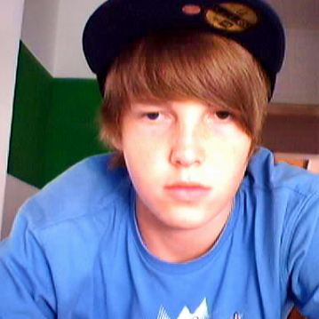
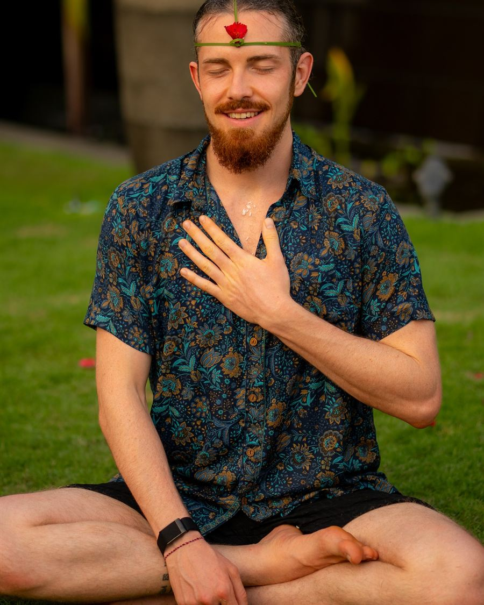
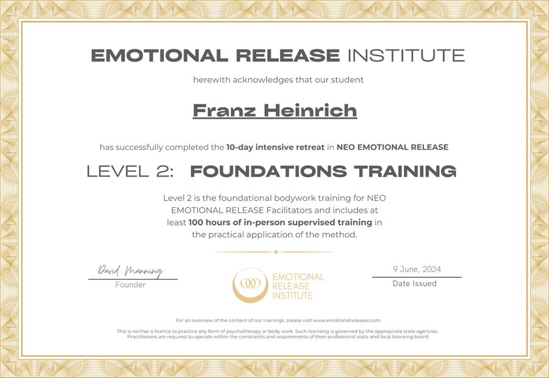
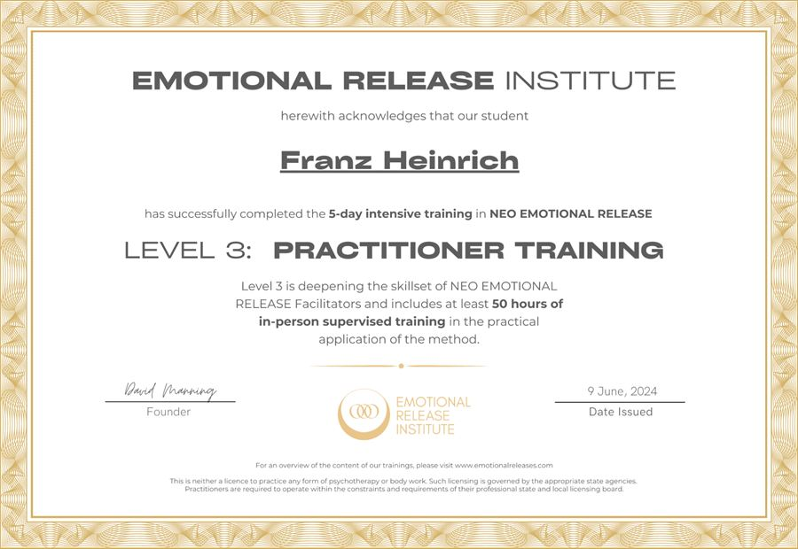
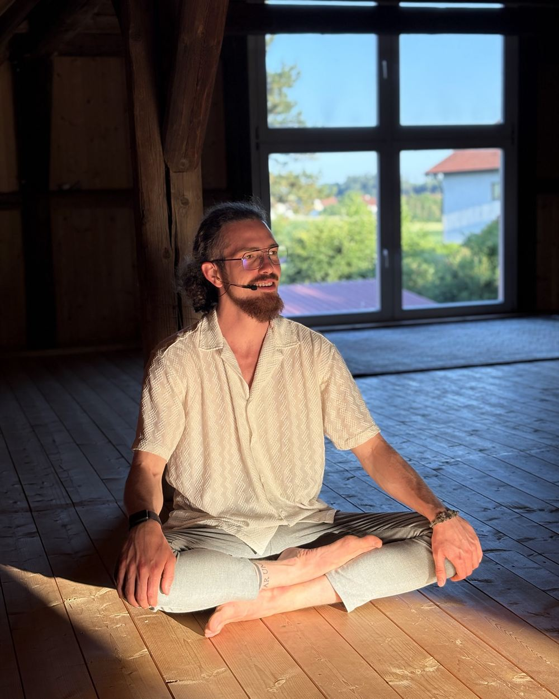

Früher
Kleinmachen war mein Normalzustand.
Platzhalter: Verstecken, funktionieren, gegen das eigene Gefühl anarbeiten — hier erzählst du, wie es war.
Hi, mein Name ist Franz.
Ich bin Emotional Release Practitioner, Prozessbegleiter und Experte im UnVerschämt-Sein.

Platzhalter: Verstecken, funktionieren, gegen das eigene Gefühl anarbeiten — hier erzählst du, wie es war.
Platzhalter: der Moment, in dem es gekippt ist — deine erste Session, dein erster Release.

Platzhalter: wie du heute lebst und arbeitest — und warum du nicht fertig bist, sondern den Weg kennst.
„Platzhalter: Was der Franz von heute dem Franz von früher sagen würde.“
Platzhalter: Drei, vier Sätze über deinen eigenen Weg — so, wie eine Klientin über dich schreiben würde. Was war vorher? Was hat sich verändert? Was ist heute möglich?
Trag dich ein, und du bekommst direkt Zugang zu meiner Emotional-Release-Meditation — mit Willkommensvideo, Audio, Integration und Playlist.
„Ich war KEINE SEKUNDE nervös und habe es einfach genossen.“
Vor einem Fest mit lauter fremden Menschen wäre ich früher wochenlang aufgeregt gewesen. Neulich war ich genau dort und habe nicht eine Sekunde darüber nachgedacht, wie ich wirke.
„Du hast mir geholfen, zu tanzen, loszulassen, lockerer zu werden.“
Wenn ich über mich und meine Prozesse spreche, erwähne ich Franz ganz oft. Über die letzten Jahre hat er mir geholfen, zu tanzen, loszulassen und lockerer zu werden. Er hat mich in meinen Emotionen begleitet und gehalten — auch in schwierigen Momenten. All das schätze ich sehr und bin wirklich sehr dankbar.


30Scham-Expertelebensfroher KindskopfDigitaler Nomade auf Teilzeit bayerischer Bub im Herzendiagnostizierter ADHSlerBarfuß- & Natur-Junkie Bewegungs-Fanatiker„Kann mich für alles begeistern“-MenschNacktbaden-Liebhaberund vieles mehr …

„Deine Emotionen sind nicht das Problem, sondern deine Beziehung zu ihnen.“
45 Minuten, kostenlos und unverbindlich. Danach weißt du, ob dein UnVerschämt-Monat jetzt dran ist.